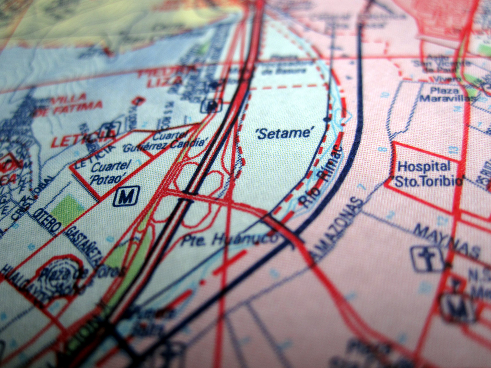

It soon seemed as if `word was getting out' about our mapping efforts, as we were soon invited by Lima-based art, technology, and society foundation Escuelab, to collaborate on a mapping project with their partners in a central Lima community called Canta Gallo. Escuelab's work, led by Barcelona artist Daniel Miracle, consisted of a series of animation, filmmaking, and live television broadcasting with a Canta Gallo artist collective known as Shuawa7.2. Canta Gallo is a community of Amazonian Shipibo who have invaded a plot of land along the bank of the Rimac river; a breathtaking site in the center of metropolitan Lima. Made up of several distinct groups, the settlement comprises Shipibo and mixed heritage members who did not move to the site together, but have slowly migrated from around Lima. They have spent the last 10 years seeking legal title to the land, and different factions are at different points in the process.
| r0.5

|
The group we began working with was situated on a large hill of rubble -- a landfill which leaked methane and around which residents had strewn concrete blocks to stop further dumping. Despite their difficult situation, the settlement seemed cheerful and was brightly painted with murals. An electric guitar and keyboard played in a local hangout, while posters on the communal meeting house indicated each family's dues toward land registration fees.
In the midst of this, Escuelab had sought to establish a more neutral space by working with local artists to develop a series of arts workshops and activities for the children of Canta Gallo. Based from a state-funded school in the settlement, Daniel Miracle and others collaborated with residents such as Layner Mori to lead students in the production of digital films, animations, and incredibly, a live broadcasting news show (in the Shipibo language, no less) using a low-cost analog television transmitter. Escuelab's interests tended towards the political, as evidenced by their engagement in Shipibo/Spanish langauge issues amongst their students7.3, as well as their close attention and sensitivity to the complex tenure situation and other sources of tension. However, their preference for an implicit treatment of these topics and their exploration through educational and artistic works was well matched with my own approach.
On my first day in Canta Gallo, we repeated some of the exercises I had used in Juan Pablo II, though in a shorter format. With help from Layner, we drew a large map of the settlement in rough outlines, and asked the students to draw their homes and place them on the map. The group, aged 6-12 and approximately 20 in number, produced a quantity of highly detailed drawings, though some students drew two or even three copies of their houses. One student drew one picture of his home in Canta Gallo and a second of his home in `la selva' -- presumably the home in the Amazonian region of Peru from which he had moved to Lima. While the non-literal nature of this kind of mapping presents challenges for data veracity, it is clear that children can produce a wealth of physical, historical, and culturally relevant detail, and I caution map-makers not to sacrifice this in favor of purely quantifiable information.